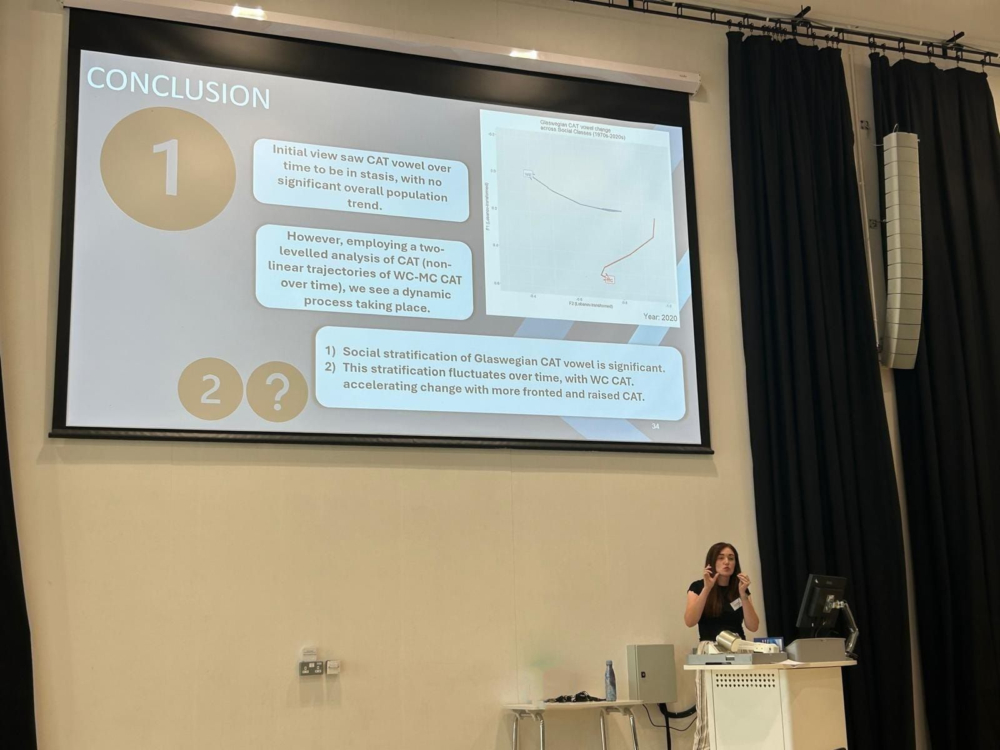
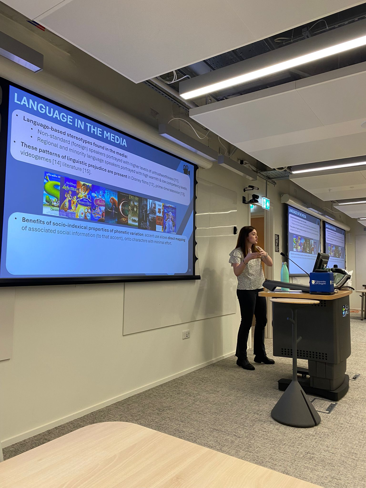

Hey, I’m Lucy!
My name is Lucy and I’m a current PhD researcher at the University of Glasgow. I am interested in the link between social identity and language. My areas of expertise are sociophonetics, social cognition and behaviour analysis, and processes involved in the social categorisation of speech. I am specifically interested in accent use in the media and accent bias.
As part of my research, I am exploring the use of time-series analyses such as eye tracking as an implicit measure of implicit cognition and biases. I am also interested in the use of large-scale corpora and modelling for social and linguistic inquiry.
As well as a researcher, I teach English Language and Linguistics at the University of Glasgow. As a graduate teaching assistant, I cover topics such as phonetics, sociolinguistics, Scots, historical linguistics, experimental design and statistics. I am also the social media co-ordinator for GULP (Glasgow University Laboratory of Phonetics).
Take a look around to see what I’ve been up to!
News
- 2nd September 2025: I presented my research at the biennial conference, UKLVC that looks at language variation and change. Here, I presented my study ‘The CAT’s out the bag’ - which looked at CAT vowel quality sound change over the last 60 years, and demonstrated the use of Generalised Additive Mixed Models (GAMMs) in plotting non-linear relationships. You can find more info on this in my research tab or better yet, get in touch!

- 16th January 2025: I was an invited speaker at the English Language & Linguistics Research Seminar (University of Glasgow). It was a great way to kick start 2025, and felt like a very big full-circle moment to be presenting my work on language in the media, at my own University.

29th November 2024: I presented my research ‘Mediatisation of the Marginalised’ at the Forum for Research on the Languages of Scotland and Ulster (FRLSU 2024, Belfast). I spoke alongside fellow researchers and langauge activists, on the consideration of the broadcast media and its impact on linguistic prejudices. I would like to express deep gratitude to the FRLSU body for awarding me with the student travel bursary award, allowing me to attend in person. For more information on the brilliant work in the legal recognition of Scots, click here.
8th November 2024: Centre of Voice Studies (CoVS), Aarhus University. I was delighted to present my current research on language perception and the media, online, alongside esteemed researchers in the area of speaker perception. Thank you for your wonderful feedback & discussion!
29th October 2024: I was invited to present my PhD research at the Lancaster University Phonetics Lab Research Seminar. I am a massive fan of the outstanding research conducted at Lancaster. So, this meant a great deal to have such a wonderful opportunity & receive invaluable feedback from experts at Lancaster. I would like to thank Prof. Claire Nance for making this possible & the extremely warm welcome that I received. I look forward to coming back with the results of my eye-tracking experiment!
21 June 2024: I was delighted to chair the session ‘The Other Said What? Marginalised languages and identities’, at the SGSAH Symposium. It was a pleasure to see the research being conducted by fellow SGSAH-funded PhD researchers on this topic, and to also present my research on Mediated Glaswegian Identities.
28 May 2024: I spoke at the ZASx Talk Sessions hosted by the Laboratory Phonology at Leibniz-ZAS, Berlin. Here, I spoke about media impact on the social evaluations of speech and using eye-tracking techniques as an implicit measure. It was a great privilege to talk to the ZAS team and receive some extremely helpful feedback on my experimental design as I am in the throws of building my eye-tracking experiment. Thank you!
7 May 2024: I gave a talk at the University of Cambridge Phonetics & Phonology Laboratory, on my research looking at accent use in the media and its impact on the evaluations of speech.
4 April 2024: I spent some time at the Leibniz-Centre of General Linguistics (ZAS) institute in Berlin, Germany. I absolutely loved getting to see their phenomenal facilities and hear all about their exciting work. A huge thank you to Sarah Wesolek and Marzena Żygis for this wunderbar opportunity!
25-27 March 2024: I presented my research at the Colloquium of the British Association of Academic Phoneticians (BAAP) in Cardiff, Wales. Great to get feedback on my research and future experiments, catching up with friends and one too many Welsh cakes.
19 January 2024: We launched the ‘PhDnetics network’, with our first meeting at Queen Margaret University. A student-led network for PhD researchers and Postdocs in phonetics, across Scotland. Our vision is to have a community that shares expertise, knowledge and support. The day was a blast!
23-25 August 2023: The Scottish sun was shining four our Residential trip to Millport, hosted by SGSAH. A brilliant couple of days shared with fellow doctoral researchers across Scotland, with a delicious balance of researcher development workshops and… cheese!
7-11 August 2023: I was invited to give a talk at the International Congress of Phonetic Sciences 2023 in Prague. This was based on my recent study ‘Game of Phones: A sociophonetic analysis of stylised media performance of Yorkshire English’. I had a blast seeing old friends and making new. You might be able to spot me on Geoff’s fantastic vlog:
31 March 2023: I was delighted to win the People’s Choice Award at the University of Glasgow three-minute thesis (3MT) competition. I gave my ‘speedy’ talk on ‘Accents in the spotlight: Uncovering our unconscious biases’.
22 March 2023: It was a great pleasure to be invited to talk at Hutchesons’ Grammar School. Here I spoke about accent bias: its effects in society and how we can tackle this discrimination. Thank you for all the wonderful students and staff who welcomed me!